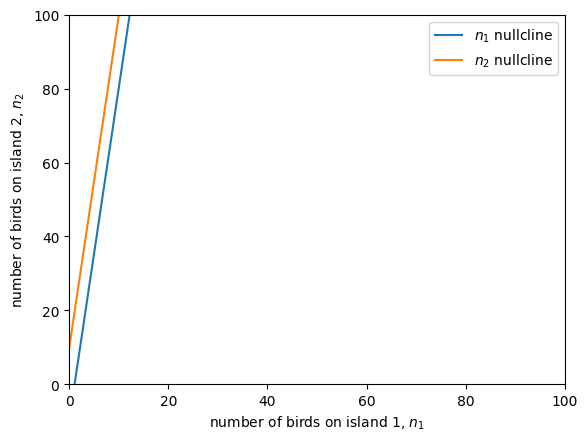

Lecture 7: Finding equilibria in linear multivariate models
Lecture overview
1. Motivation
We now know that we can represent our linear multivariate model for the number of birds on two islands in matrix form,
where
with \(n_i\) the number of birds on island \(i\) at time \(t\), \(b_i\) the birth rate on island \(i\), \(d_i\) the death rate on island \(i\), \(m_{ij}\) the rate at which birds on island \(j\) migrate to island \(i\), and \(m_i\) the rate at which birds arrive to island \(i\) from elsewhere.
Next we would like to solve for the equilibria. We can start by setting the differential equation to 0 and subtracting \(\vec{m}\) from both sides,
Now to isolate our variable, \(\hat{\vec{n}}\), we effectively need to move \(\mathbf{M}\) to the other side of the equation. In normal algebra we would simply divide both sides by \(\mathbf{M}\). But note that in the last lecture we discussed matrix addition and multiplication. We did not yet discuss division. This is because for matrices there is no such thing as division. The analogy is the inverse.
2. Matrix inversion
A square \(m\times m\) matrix \(\mathbf{M}\) is invertible if it may be multiplied by another matrix to get the identity matrix. We call this second matrix, \(\mathbf{M}^{-1}\), the inverse of the first,
Geometrically, the inverse reverses the stretching and rotating that the original matrix does to a vector,
There are rules to find the inverse of a matrix when it is invertible. To know if a matrix is invertible we can calculate the determinant.
Determinant
The determinant of a \(2 \times 2\) matrix is
In principle we can calculate the determinant of any square matrix. The determinant of an \(n \times n\) matrix can be obtained by working along the first row, multiplying the first element of the first row by the determinant of the matrix created by deleting the first row and first column minus the second element of the first row times the determinant of the matrix created by deleting the first row and second column plus the third element... and so on.
For example,
More generally we can perform this technique along any row or any column. The trick is remembering which terms are added and which are subtracted. One way to remember is: if both the row \(i\) and column \(j\) are even or both are odd then the term multiplied by the element at that position, \(m_{ij}\), gets a plus, otherwise it gets a minus.
General formula for determinants
Moving along any row \(i\),
Moving along column \(j\),
A few useful rules emerge from this method:
- the determinant of a matrix is the same as the determinant of its transpose, \(|\mathbf{M}| = |\mathbf{M}^\intercal|\),
- the determinant of a diagonal or triangular matrix is the product of the diagonal elements, \(|\mathbf{M}| = \prod_{i=1}^n m_{ii} = m_{11}m_{22}\cdots m_{nn}\),
- the determinant of a block-diagonal or block-triangular matrix is the product of the determinants of the diagonal submatrices.
It also suggests that rows or columns with lots of zeros are very helpful when calculating the determinant, for example,
Now, why does the determinant tell us anything about whether a matrix is invertible? Well, when the determinant is zero, \(|\mathbf{M}|=0\), it means that the rows are not linearly independent, that is, some row \(\vec{r}_k\) can be written as \(a_1 \vec{r}_1 + \cdots + a_{k-1} \vec{r}_{k-1} + a_{k+1} \vec{r}_{k+1} + \cdots + a_n \vec{r}_n\), where the \(a_i\) are scalars and the \(\vec{r}_i\) are the rows of \(\mathbf{M}\). As a result, when we multiply a vector by a matrix with a determinant of zero we lose some information and therefore cannot reverse the operation. This is analagous to mutliplying by 0 in normal algebra -- if we multiply a bunch of different numbers by zero we have no way of reversing the operation to know what the original numbers were. So, a matrix is invertible if and only if it has a nonzero determinant, \(|\mathbf{M}|\neq0\). Matrices that are not invertible are called singular.
Geometrically, mutliplying multiple vectors by a matrix whose deteriminant is zero causes them to fall along a line. Below we multiply the two black vectors by a matrix whose determinant is zero to get the two red vectors, which fall along the same line. We have lost information and cannot undue the operation to recover the original vectors.
import matplotlib.pyplot as plt #import plotting library
from sympy import *
v1 = Matrix([[2],[1]]) #column vector 1
v2 = Matrix([[1],[1]]) #column vector 2
M = Matrix([[1/2,1],[1,2]]) #matrix with determinant of zero
#original vectors
for v in [v1,v2]:
plt.arrow(0, 0, #starting x and y values of arrow
float(v[0]), float(v[1]), #change in x and y
head_width=0.1, color='black', length_includes_head=True) #aesthetics
#stretched and rotated vectors
for v in [M*v1,M*v2]:
plt.arrow(0, 0, #starting x and y values of arrow
float(v[0]), float(v[1]), #change in x and y
head_width=0.1, color='red', length_includes_head=True) #aesthetics
plt.xlim(0,5) #set bounds on x axis
plt.ylim(0,5) #set bounds on y axis
plt.show()

Inverting
Now back to how to find the inverse of a matrix.
For an invertible 2x2 matrix we do the following
Larger matrices are more difficult to invert by hand. One exception is if they are diagonal, in which case we simply invert each of the diagonal elements,
3. Solving for equilibrium
OK, now let's return to our model of birds on islands,
and solve for the equilibria, \(\hat{\vec{n}}\).
We do this by setting the rate of change to zero \(\frac{\mathrm{d}\vec{n}}{\mathrm{d}t}=0\), subtracting \(\vec{m}\) from both sides, and multiplying by the inverse matrix \(\mathbf{M}^{-1}\) on the left:
We can write the left hand side in terms of our parameters by calculating the inverse of this 2x2 matrix and multiplying by the vector
Ta-da! Using linear algebra we solved for both equilibria, \(\hat{n}_1\) and \(\hat{n}_2\), with a single equation.
We can visualize this equilibrium as the intersection of the nullclines, which are the values of the variables that make the change in each variable zero. In this case we can solve for the nullclines in terms of \(n_2\),
and
and plot them as functions of \(n_1\). Our predicted equilibrium correctly lands right on the intersection of the two nullclines.
import matplotlib.pyplot as plt
from sympy import *
import numpy as np
# define the variables
n1, n2 = symbols('n1, n2')
# Choose the parameter values
b1, b2 = 1, 1
d1, d2 = 1.1, 1.1
m12, m21 = 0.05, 0.05
m1, m2 = 5, 5
# define differential equations
dn1dt = (b1 - d1 - m12) * n1 + m21 * n2 + m1
dn2dt = m12 * n1 + (b2 - d2 - m21) * n2 + m2
# get the nullclines
nullcline_1 = solve(Eq(dn1dt, 0),n2)[0]
nullcline_2 = solve(Eq(dn2dt, 0),n2)[0]
# plot
n1s = np.linspace(0,100,100)
plt.plot(n1s, [nullcline_1.subs(n1,i) for i in n1s], label='$n_1$ nullcline')
plt.plot(n1s, [nullcline_2.subs(n1,i) for i in n1s], label='$n_2$ nullcline')
# add predicted equilibrium
n1eq = -((b2-d2-m21)*m1-m21*m2)/((b1-d1-m12)*(b2-d2-m21)-m21*m12)
n2eq = -(-m12*m1+(b1-d1-m12)*m2)/((b1-d1-m12)*(b2-d2-m21)-m21*m12)
plt.scatter(n1eq,n2eq, color='k', zorder=2, s=100, label='equilibrium')
plt.xlabel('number of birds on island 1, $n_1$')
plt.ylabel('number of birds on island 2, $n_2$')
plt.xlim(0,100)
plt.ylim(0,100)
plt.legend()
plt.show()

4. Solving for equilibrium when singular
Now, if our matrix \(\mathbf{M}\) is singular we can still try to solve for equilibrium, we just can't use matrix algebra. Instead we try to simultaneously solve all equations. We've nearly done this above with the nullclines already. Setting the two nullclines equal to one another to find their intersection,
This is either true or not true, regardless of \(n_1\) and \(n_2\). This means that the two nullclines intersect everywhere or nowhere, which implies there are either infinite equilibria (along the shared nullcline) or no equilibria.
Below is a scenario where there are no equilibria, in which case the nullclines never cross because they are parallel to one another.
import matplotlib.pyplot as plt
from sympy import *
import numpy as np
# define the variables
n1, n2 = symbols('n1, n2')
# choose the parameter values
b1, b2 = 1.1, 1
d1, d2 = 1.01, 1.01
m12 = 0.5
m21 = (b1 - d1)*(b2 - d2 - m12)/(m12 + (b2 - d2 - m12)) #forces zero determinant
m1 = 5
delta = 10 #0 for infinite equilibria, nonzero for no equilibria
m2 = m1*(b2 - d2 - m12)/m12 + delta
# define differential equations
dn1dt = (b1 - d1 - m21) * n1 + m12 * n2 + m1
dn2dt = m21 * n1 + (b2 - d2 - m12) * n2 + m2
# get the nullclines
nullcline_1 = solve(Eq(dn1dt, 0),n2)[0]
nullcline_2 = solve(Eq(dn2dt, 0),n2)[0]
# plot
n1s = np.linspace(0,100,100)
plt.plot(n1s, [nullcline_1.subs(n1,i) for i in n1s], label='$n_1$ nullcline')
plt.plot(n1s, [nullcline_2.subs(n1,i) for i in n1s], label='$n_2$ nullcline')
# # add predicted equilibrium
# n1eq = -((b2-d2-m21)*m1-m21*m2)/((b1-d1-m12)*(b2-d2-m21)-m21*m12)
# n2eq = -(-m12*m1+(b1-d1-m12)*m2)/((b1-d1-m12)*(b2-d2-m21)-m21*m12)
# plt.scatter(n1eq,n2eq, color='k', zorder=2, s=100, label='equilibrium')
plt.xlabel('number of birds on island 1, $n_1$')
plt.ylabel('number of birds on island 2, $n_2$')
plt.xlim(0,100)
plt.ylim(0,100)
plt.legend()
plt.show()

5. Summary
We can solve multivariate linear equations using matrix inversion, giving us a way to find equilibria when the matrix is invertible (ie, the determinant is nonzero). These equilibria are where the change in all variables is zero, i.e., where the nullclines for all variables intersect.
Practice questions from the textbook: P2.6-P2.11.